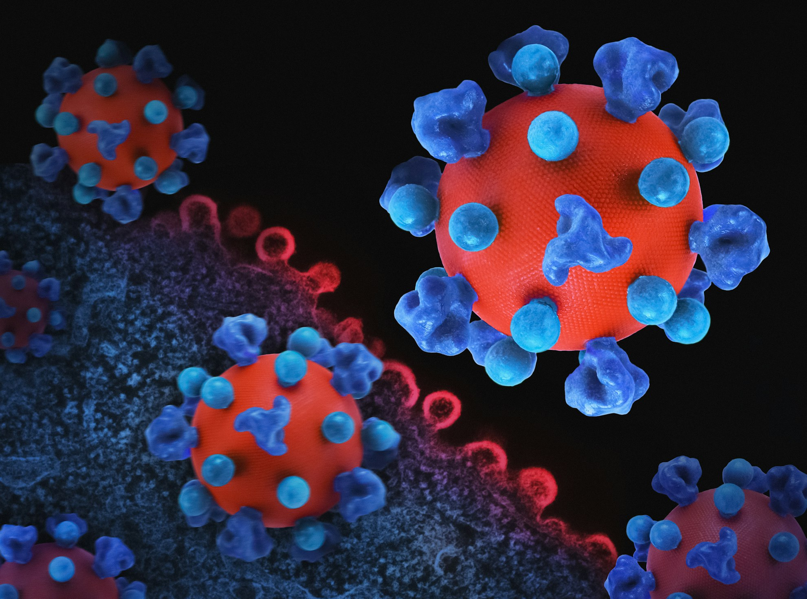

What shapes gut diversity?
The human gut is home to trillions of microorganisms that comprise the gut microbiome. Each individual’s gut microbiome is unique, consisting of over 100 different species of microorganisms. Scientific evidence indicates that human colons host between 10^11 to 10^12 microorganisms per mm². This suggests that for an average colon length of 20 feet, the microbial count is extraordinarily high. Beyond the colon, the entire human body is regulated and balanced by the microbiome. For example, the skin and scalp can become dry during winter due to changes in the skin’s microbiome composition in response to weather changes.
But why are gut biotas so crucial in modern-day clinical discovery, and why have their studies skyrocketed over the last decade? The answer is straightforward: Many diseases that do not have a physical manifestation, such as anxiety, depression, and diabetes, are often linked to poor gut flora. For instance, patients with obesity typically have poor biota composition, autoimmune disease sufferers have a low abundance of bacteria, and those with depression and anxiety also exhibit low gut flora diversity.
What factors alter the gut biome and invite unwanted diseases? Understanding these factors is crucial for maintaining health and fitness at all ages.

Since prehistory, humans have consumed soils as a supplement for good gut health, a practice historically known as “geophagy.” This tradition persists in many communities worldwide. For example, in lower western Australia, indigenous communities often consume a pinch of soil after rain to promote good health through the intake of soil microbiomes. Interestingly, I watched a YouTube video by Dr. Berg where a viewer from a city area also mentioned geophagy as an established habit.
-
One factor that affects gut diversity is an individual’s diet. Dietary habits, infant weaning, and feeding practices are crucial determinants of gut microbiome variations. The introduction of high-fiber and carbohydrate foods increases Firmicutes and Prevotella, while high-fiber and animal protein foods increase Bacteroidetes. The gut microbiome remains relatively stable in adulthood but varies between individuals due to enterotypes, body mass index (BMI), exercise frequency, lifestyle, and cultural and dietary habits.
For example, a significant difference in gut biome was recorded between male hunters and female non-hunters among the tribes in Tanzania. Male hunters, with lower availability of fiber foods, had low gut diversity, whereas females, whose diets regularly included healthy earthly fibers, had an increased abundance of healthy gut bacteria.
-
Gut diversity can also be influenced by external factors, including neurological disorders. Recent discoveries on the microbiota-brain-gut axis reveal that patients with neurological disorders have a reduced number of certain bacterial strains. For instance, bifidobacteria numbers are reduced in patients with schizophrenia and Parkinson’s disease. Similarly, other bacteria like Coprococcus, Roseburia, and Blautia species are less abundant. The brain and gut interact through the central nervous system and the vagal nerve. Thus, an unstable brain can influence higher synthesis of neurotransmitters like serotonin. An overabundance of harmful gut flora results in more stress and anxiety symptoms. Conversely, an unhealthy gut, which produces more serotonin, can affect the brain and exacerbate neurological disorders. Strains like Lactobacillus Rhamnosus decrease with poor brain health, indicating that neurological imbalances can worsen gut health.
It is essential to maintain good brain health by following one’s passion, reducing work-related stress, and maintaining healthy relationships with loved ones.
- Physical exercise and fitness also impact gut diversity. Moderate exercise has been shown to increase gut flora diversity in both young and adult individuals. Certain strains of bacteria, especially bifidobacteria, increase in abundance with regular exercise. However, while moderate exercise boosts good bacteria in both young and older adults, extensive training can reduce intestinal diversity. For instance, in a 160 km (100-mile) race, up to 47% of participants reported upper GI complaints. All types of non-professional athletic exercise fall under moderate exercise and have positive benefits.
In conclusion, gut diversity is essential for maintaining good health. Individuals must prioritize their diet, exercise, and physical fitness levels to sustain a healthy gut microbiome. Moreover, those with neurological disorders should be aware of their gut microbiome’s health and take measures to promote a healthy microbiome. The gut-brain axis is a critical aspect of overall health and well-being, and further research is needed to understand its mechanisms and how we can improve it.